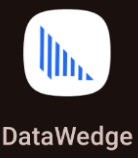
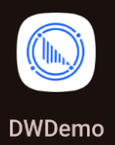
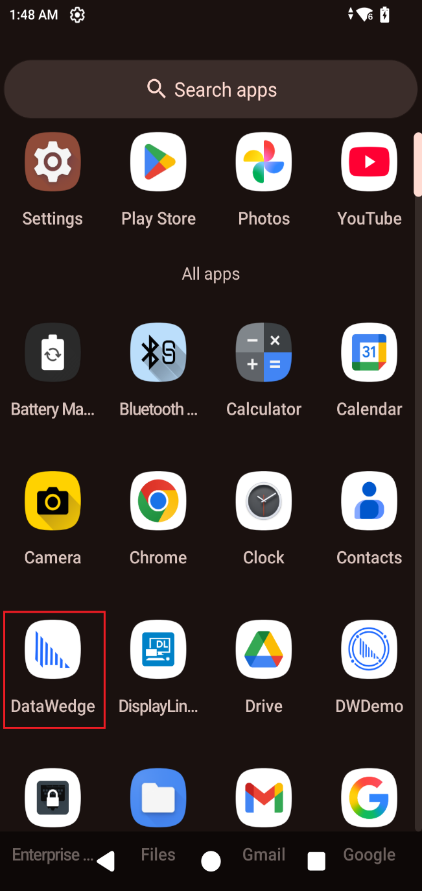
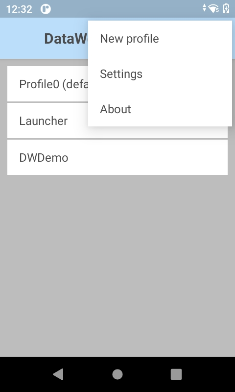
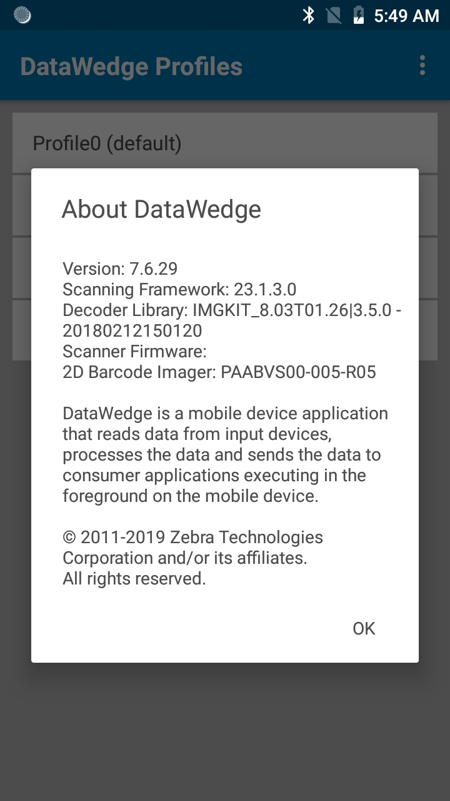

概要
Zebra DataWedge は、新規アプリケーションと既存アプリケーションの両方でデータ キャプチャを効率化するアプリケーション サービスです。必要に応じてコードを使用し、制御を強化することもできます。これにより、デバイス上の任意のアプリで、バーコード スキャナ、イメージャ、MSR、RFID、音声、シリアル ポートなど、さまざまな入力ソースからデータを収集できます。収集したデータは、シンプルなオプションやカスタマイズされた複雑なルールを使用して形式を整えることができます。さらに、DataWedge は、ライセンス プレート、ID カード、出荷ラベルなどをキャプチャした画像から情報を抽出できます。
DataWedge はプロファイルに基づいて動作します。プロファイルには、DataWedge と関連付けられた 1 つ以上のアプリケーションとの連携方法を指定する設定が含まれています。これらのプロファイルは、手動で、または Android インテント API を使用してプログラムで構成でき、一括展開もサポートします。DataWedge は、すべての Zebra Android デバイスにあらかじめインストールされています。
最新バージョンの DataWedge の新機能については、「新機能」を参照してください。
DataWedge の概要と、ユーザー インターフェイスを介して一般的なタスクを実行してデータをキャプチャする方法について段階的な手順について説明します。
DataWedge は、インテントをサポートするあらゆる言語とのシームレスな統合を促進し、Android インテントを介してビジネス アプリケーションと通信します。Java、Kotlin、.Net MAUI などの言語を使用して、DataWedge をデータ キャプチャに活用するアプリケーションを開発できます。さらに、Zebra の Enterprise Browser を使用して、DataWedge の機能を備えたブラウザ ベースのアプリケーションを作成できます。DataWedge インテント API の使用方法とベスト プラクティスについては、『プログラマ ガイド』、『開発者向けの記事とブログ』および『サンプル』を参照してください。
DataWedge ユーザー向けの重要なリソース:
- 「使用上の注意と動作」には、DataWedge の使用に関する重要な情報が記載されています。
- 機能マトリックスは、コンポーネントのバージョン（DataWedge のバージョン、ビルド バージョン、スキャン エンジンなど）に基づいてサポートされる機能に関する情報を提供します。
- DataWedge インテント API の使用方法とベスト プラクティスについては、『プログラマ ガイド』、『開発者向けの記事とブログ』および『サンプル』を参照してください。
- 一般的な問題の解決方法、問い合わせへの回答、DataWedge の一般的な使用例については、「よくある質問 (FAQ)」セクションを参照してください。
• 特定の Bluetooth スキャナ識別子は、Android 11 以降を搭載した一部の Zebra デバイスのスキャナの選択では廃止されています。
• レポート機能や音声入力オプションなど、一部の DataWedge 機能は、今後廃止される可能性がある非推奨機能です。詳細については、以下の「重要な情報」セクションを参照してください。
ソフトウェア バージョンに関する注意事項:
機能や動作は、ソフトウェアのバージョンによって異なる場合があります。たとえば、DataWedge 15 で使用できる機能は、DataWedge 14 以前のバージョンで使用できる機能とは異なる場合があります。ソフトウェアのバージョン番号を確認し、対応するマニュアルを参照して、機能の利用可否と互換性を確認することを強くお勧めします。
このガイド全体を通して表示されるサンプル アプリ画面の外観は、DataWedge のバージョン、Android のバージョンおよび画面サイズによって異なることがあります。
重要な情報
NextGen SimulScan
NextGen SimulScan は、DataWedge および DataWedge インテント API を介してアクセス可能な内部スキャン フレームワークに移行された主要な SimulScan 機能で構成されています。その機能は、一部の Bluetooth スキャナ、および Android 8.x Oreo 以降を実行しているイメージャやカメラを内蔵したすべての Zebra デバイスでサポートされています。TC21 および TC26 などの Zebra Professional シリーズ デバイスでは、NextGen SimulScan は Mobility DNA Enterprise ライセンスを必要とします。NextGen SimulScan の機能 (以前は SimulScan の一部) は、次のとおりです。
- マルチバーコード - 1 回のスキャン セッションで複数の固有バーコードを取得し、スキャンしたデータを即座に配信するか、スキャンごとに指定されたバーコード数に到達した後で配信します。現在使用可能なオプションは次のとおりです。
- スキャンあたりのバーコード数:
- スキャンするバーコードの固定数を設定します。
- スキャンするバーコードの最小数と最大数を設定します (DataWedge 11.1 で導入)。
- 即時レポート - スキャン セッション内の固有バーコードを即座にレポートします(廃止予定の DataWedge レポートと混同しないでください)。
- デコードされたバーコードのレポート - 1 回のスキャン セッションでデコードされたバーコードをレポートします。
- ドキュメント キャプチャ - ドキュメント キャプチャ/NextGen SimulScan テンプレートに基づいてドキュメントをスキャンします。NG SimulScan テンプレート ビルダを使用してテンプレートを作成するか、 DataWedge 11.1 以降では、プリロードされたドキュメント キャプチャ テンプレートのいずれかを使用します。
詳細については、「Simulscan 移行警告」を参照してください。
音声入力オプションは廃止予定
Android 13 以降では、次の音声入力機能は使用されておらず、廃止されています。
- データ キャプチャ開始オプション - 開始フレーズ
- データ キャプチャ開始フレーズ
- データ キャプチャ終了フレーズ
音声キャプチャをトリガする PTT ボタンを使用して移行することをお勧めします。
廃止されるレポート
DataWedge レポート (マルチバーコードの即時レポートと混同しないでください) は、Android 13 以降では使用されておらず、廃止されています。以前にレポートで使用できたデータは、引き続き次の DataWedge インテント API を通じて使用可能で、サポートされているスキャナとパラメータを識別できます。
- スキャナの列挙 - デバイスで使用可能なスキャナのインデックスを生成します。
- 構成の取得 - 指定されたプロファイルから、
PARAM_LIST設定、またはサポートされているパラメータを取得します。値ペアのセットまたはプラグイン構成バンドルとして返されます。サンプル コードについては、「バーコード パラメータの取得」を参照してください。
DataWedge 15.0 の新機能
IMPORTANT NOTE:DataWedge 14.1 で追加された以下の新機能は、DataWedge 15.0 の初期リリースには含まれていませんが、後続のアップデートには含まれています。- 構成のエクスポート API
- カスタム区切り文字
- アプリケーション識別子（AI）を囲む括弧の保持
- Android の内部ストレージの変更に合わせた、プロファイルおよび構成ファイルのインポート/エクスポート用デフォルト フォルダ パスの改訂
- RFID 入力では ET6X デバイスがサポートされるようになりました。
DataWedge 15.0.2 の新機能
- ピックリスト + OCR および自由形式 OCR 用の新しい正規表現 (RegEx) オプション。OCR 結果から、発送ラベルの PO 番号などの重要な情報を直接フィルタリングして抽出するための特定のパターンを定義します。
DataWedge 15.0.14 の新機能
- プロファイルおよび/または構成ファイルをエクスポートするための新しい構成のエクスポート API。
- 新しいカスタム セパレータ。UDI、GS1、GS1 Digital Link、MultiBarcode、または Workflow データ キャプチャでトークンを区切るために使用するカスタム文字を定義します。SetConfig を使用してパラメータをプログラムで設定し、GetConfig を使用してキーストローク出力経由でパラメータを取得します。
- UDI、GS1および GS1 Digital Link データ キャプチャ時にアプリケーション識別子 (AI) の周囲に括弧を保持する新機能。
- Android の内部ストレージの変更に合わせて、DataWedge プロファイルと構成ファイルのインポートとエクスポートのデフォルト フォルダ パスを修正し、公開フォルダ経由でファイルをエクスポートおよびインポートできるようになりました。
DataWedge 15.0.19 の新機能
- 接続された Bluetooth スキャナを使用したスキャン中にトリガされる、新しいショート バーストおよびロング バースト振動通知。
DataWedge 15.0.28 の新機能
- 新しいカスタム Bluetooth スキャナ通知では、特定の LED パターン、ビープ音、および振動シーケンスを設定することで、Bluetooth スキャナでのスキャンに合わせて通知をカスタマイズできます。
- OCR デコードでカメラ スキャンが新たにサポートされ、内蔵イメージャを搭載していないデバイスでも利用可能になりました。
- カメラでスキャンすると、ビューファインダに赤ではなく緑の十字線が表示されるようになりました。
- 関心領域 (ROI) のデフォルトのサイズを設定し、手動で調整したサイズを保持するかどうかを制御する自由形式 OCR の新しいオプション。
DataWedge 15.0.37 の新機能
- 接続された Zebra USB スキャナからのデータ デコードを可能にする SNAPI キャプチャ モードを導入しました。
DataWedge 15.0.46 の新機能
- 新しい NG SimulScan Plus には AI 機能が統合されており、ワークフロー内でスキャンする際に複数のバーコードをリアルタイムで強調表示します。SetConfig を使用して、ワークフロー入力を介してパラメータをプログラムで設定します。
DataWedge 15.0.52 の新機能
- 新しいイメージャ フレーム ストリーミング機能は、画像フレームを低遅延で連続的にアプリケーションへ直接配信し、リアルタイムの処理と表示を同時に行えるようにします。データ出力例は、『ワークフロー入力プログラマ ガイド』に記載されています。
- SetConfig APIを使用し、ワークフロー入力を介して、イメージャ フレーム ストリーミングのパラメータをプログラムで設定します。
- 新しい フレームの要求 API はイメージャ フレーム ストリーミング用の 1 フレームを要求します。
RESULT_INFOバンドル内で返される 2 つの新しい結果コード (FEATURE_NOT_SUPPORTEDおよびWORKFLOW_IN_INVALID_STATE) が追加されました。
DataWedge 15.0.55 の新機能
- インテント出力で GS1 および GS1 Digital Link バーコードの解析がサポートされるようになり、GTIN、有効期限、ロット番号など、自動的に抽出された製品の詳細情報が、インテントを介して構造化データとして配信されます。
DataWedge 15.0.60 の新機能
- 新しいキーボード レイアウトの高さオプションでは、DataWedge キーボードの表示領域の高さを 10% ～ 100% の範囲で調整できます。これにより、さまざまなスキャンおよびデータ入力ワークフローに合わせて、視認性と使いやすさを向上させることができます。SetConfig を使用し、キーストローク出力を介してパラメータをプログラムで設定します。
- 3 つのスキャン モードを備えた新しい GS1 Digital Link デコーダにより、販売現場でのスキャナ機能が強化され、小売業界が 2D バーコードへ移行するなかで、正確な処理を確保し、トランザクション エラーを防止できます。
DataWedge 15.0.69 の新機能
- 自由形式 OCR とピックリスト + OCR に自動キャプチャ モードが導入されました。このモードでは、検出された OCR データがユーザー定義の Regex ルールと一致すると、テキストを自動的にキャプチャして出力するハンズフリー スキャン オプションを利用できます。
- SetConfig API を使用して、自由形式 OCR またはピックリスト + OCR の自動キャプチャ モードをプログラムで設定します。
- DataWedge Manager CSP を使用した Profile0 の有効化/無効化: 管理者は、DataWedge Profile0 を有効化、無効化、またはリセットして、特定の動作状態を適用したり、デバイス ユーザーに設定管理の権限を戻したりできるようになりました。
DataWedge 15.0.71 の新機能
- イメージャ フレーム ストリーミング機能 (v15.0.52 で導入) に、新しい画像キャプチャおよびデコード オプションが追加され、画像フレームのリアルタイム処理および表示と並行してバーコードをデコードできるようになりました。
DataWedge 15.0.72 の新機能
- ブランディング刷新の一環として、DataWedge と DWDemo のアイコンが更新されました。


DataWedge 15.0.77 の新機能
- Codablock デコーダのサポートが追加されました。
バージョン履歴
「バージョン履歴」を参照してください。
インストールされているバージョンの確認方法
デバイスにインストールされている DataWedge バージョンを確認するには、次のいずれかを実行します。
A. DataWedge で [バージョン情報] 画面を開きます。手順は後述のとおりです。
B. DataWedge から [アプリ情報] を開きます。アプリ画面の [DataWedge] アイコンを長押しして、[アプリ情報] をタップします。
C. 「バージョン情報の取得」 DataWedge インテント API を使用して、DataWedge のバージョンを取得します。
DataWedge で [バージョン情報] 画面を開くには、次の手順に従います。
1.デバイス上のプログラム画面またはアプリ ドロワで DataWedge アイコンを探してタップします。

DataWedge 6.x の起動プログラム アイコン2.3 ドット メニュー アイコンをタップします。[DataWedge] メニューが表示されます。

3.[情報] をタップします。[DataWedge について] 画面が表示されます。DataWedge のバージョン番号が表示されます。Scanner Framework のバージョンも表示されていることに注意してください。特定の機能は、Scanner Framework のバージョンに依存する場合があります。詳細については、「機能マトリックス」を参照してください。

バージョン番号を示す「DataWedge 情報」ボックス4.デバイスの DataWedge バージョンがこのガイドのバージョンと異なる場合は、TechDocs タイル ページに戻り、DataWedge タイルのドロップダウン メニューから該当するバージョンを選択します。
一部のデバイス固有の統合ガイドには、DataWedge の構成方法や、アプリと DataWedge の統合方法に関する推奨事項が記載されています。これらは、Zebra サポート サイトで入手できます。
サポートされている周辺機器
外部のスキャナおよびイメージャは、サポートされているスキャナ フレームワークのバージョンに基づいて、DataWedge UI で表示できます。次に例を示します。
- DS2208
- DS2278
- DS3608
- DS4608
- DS3678
- DS8108
- DS8178
- DS9308
- DS9908
- LI3608
- LI3678
- RS507
- RS4000
- RS5000
- RS5100
- RS6000
- RS6100
「Bluetooth SSI スキャナ」および「USB SSI スキャナ」を参照してください。
言語サポート
DataWedge は、選択した次のいずれかのシステム言語で実行することが認められています。
- 英語
- フランス語
- ドイツ語
- イタリア語
- スペイン語
- 簡体字中国語
- 繁体字中国語
- 日本語
システム言語を変更した後、選択した言語を反映するには、画面の更新（DataWedge を閉じてから再度開くなど）が必要です。
関連ガイド: